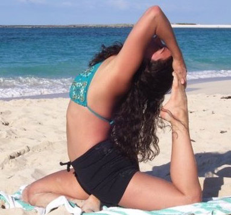
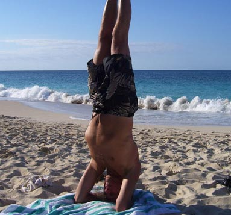
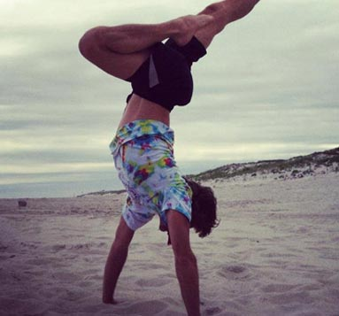
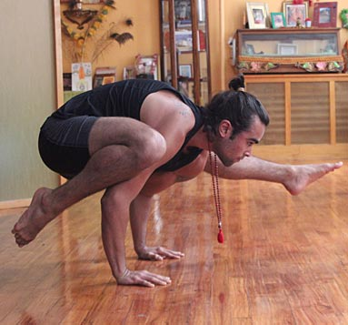
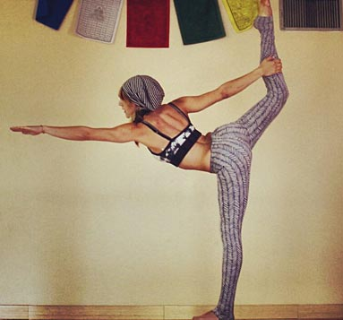
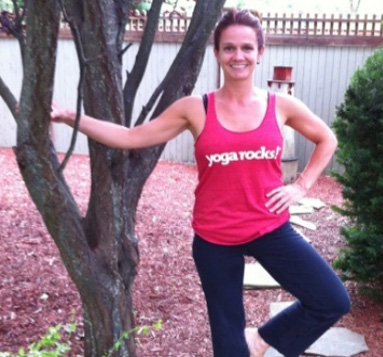
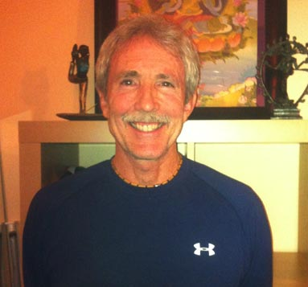

 Lara Schneeberg started practicing and fell in love with Bikram Yoga in 2004. She was soon hired at Yoga Oasis in Woodbury, New York as the assistant to the owner and spending most of her time there working and practicing. Lara completed her Hot Yoga Teacher Training offered at Yoga Oasis in the Spring of 2005 and began teaching the following December. During this time she expanded her practice and teaching to include Hot Power Yoga, Ashtanga, Vinyasa Yoga.
In April of 2007 she completed David Swenson's Ashtanga Yoga Teacher Training and completed her 200 Hour Registered Yoga Teacher Training with Sri Dharma Mittra in August 2009.
Lara is a Level I & II Thai Massage Therapist certified by Lotus Palm School of Thai Massage in Montreal and also studied Acro Yoga, Partner Yoga, Kundalini Yoga, Reiki and Holistic Health and Nutrition.
After 4 years teaching across Long Island and Queens at many different studios, Lara has finally decided to settle down and open a place of her own -a place to inspire and share what she has learned. Part of her goal is to make yoga affordable for everyone, to guide seekers at finding inner peace and happiness through the eight limbs of yoga, selfless service, non-violence and compassion for all living things.
 Larry Weinberg began his yoga practice in 1969 at the Sivananda Yoga Ashram in Val Marin, Canada. He completed the Sivananda Yoga Teacher Training course in the summer of 1970 and has dedicated his life to studying, teaching and sharing the knowledge he gained with others throughout the years.
Larry is also a New York State Licensed Massage Therapist who graduated from The New Center for Wholistic Health in 1989 and has had a private practice for over 20 years.
In his yoga classes, Larry creates a fun and safe environment where students can enjoy peace, tranquility and relaxation while learning the benefits of living a spiritual lifestyle.
 Eugene Feis is a Dharma Yoga® Center, NYC, certified teacher (200 hours) and has been practicing yoga for over 25 years. He also is certified as a hot yoga teacher (100 hours) and as a hatha yoga teacher (200 hours) from the School of Living Wisdom and teaches partner (acro) yoga. He combines the physical aspects of yoga with its health and well-being aspects, and he grounds his practice in the traditional, ethical rules which dictate that each posture be a dedication to the god energy that is alive and is within each of us.
The classes Eugene teaches have a flow and ease that originate from within. Each pose has a purpose, which is to bring students to a place that is unique to them. He begins each class with a moment of silence, in recognition of love and compassion for every person in class. Eugene has also been practicing reiki for a number of years and is certified as a Reiki Master, as well as certified in Thai Yoga Therapy from Thai Massage Sacred Bodywork in New York City. His reiki circles (shares) are held weekly and are by donation only.
Eugene also promotes karma yoga through the healing work he does with reiki. He has performed reiki on children, senior citizens, adults, dolphins, bugs, birds, and domesticated animals. He also practices distance reiki, whereby he directs the healing energy to people and areas far away that have been stricken by tragedy. Eugene is registered with Yoga Alliance, an IRC § 501(c)(6) professional and trade association that supports the yoga profession and business. Spirituality, consistency, and dedication are the hallmarks of Eugene’s practice.
 Dov Vargas also known as Varuna, was born into a family of yogis. Studying under Sri Dharma Mittra for a number of years and teaching for 4, he received his 200, 500, and 800 hour 'Life as a Yogi' certifications. Dov was initiated into the Dharma Lineage by Swami Kailashananda as a boy. He has a desire is to spread the wisdom of Dharma around the world to help liberate and touch the hearts of as many people as he can. He embodies what the Dharma tradition is all about, with a true reverence for his guru, devoting his entire life to the practice and teachings. As a practitioner his asana practice is advanced, as a teacher he is compassionate. Dov helps run 2 Dharma Yoga Centers in NY, teaching full time and doing workshops around the world. His calming nature has the ability to engulf a room and set a meditative tone, helping souls that cross his path to achieve self realization.
 Raquel has been teaching yoga for 3 years. She has a 150 hour Hot Yoga Certification with Sayville Hot Yoga, RYT- 200 and 500 hour Dharma Certification. Raquel has taught at Sayville Hot Yoga, Yoga for Life, Love Yoga Shala, Rocky Point Hot Yoga, Dharma Yoga Center NY, and Dharma Yoga center LI. She teaches privates, group classes, and workshops. She represents Dharma Yoga Center for the clothing brand Lu Lu Lemon and has over 12,000 followers on her Instagram page @dharmayogacenter. Yoga is not just a job for Raquel she practices regularly with the Master Sri Dharma Mittra every week, taking meditation, Kirtan classes, and continued education classes. She is also on her way to become an Acro Yoga teacher and just finished her first immersion. Whether you are a beginner or advance yogi, Raquel will help assist your growth spiritually, mentally, and physically.

Danielle Gagnon B.S. ED. and PSY, M. Art Therapy, Registered Art Therapist, C-YRKT Danielle has been on a yoga journey for a while but, it really has made a significant impact on her over the past several years. Sayville Hot Yoga has been her place of inspiration. Danielle has worked in the Sachem School District for eleven years. A love for children and children’s self-growth has always been part of her being. Having a Dual Bachelor’s Degree in Education and Psychology and a Master’s in Art Therapy she has always been working on programs in the school to promote positive self-esteem and positive relationships. She has used her art background to run various arts based / writing programs in her school. These programs include; working with her entire school graphically, educating staff about the importance of art in the classroom, working with children whose families are facing divorce and most importantly working with art to enhance learning in her classroom, daily.
Children are required to fulfill very specific tasks in school and this can cause heavy stressors on children of all ages. Throughout her yoga journey Danielle has realized that yoga can have a very similar impact on children as art does. Upon research, Danielle gratefully found the Yoga Rocks Program and became a C-YRKT (Certified Yoga Rocks Kids Teacher) in May of 2013. She now uses stretching and breathing in her own classroom to increase stamina and promote healthy living. Danielle believes that yoga can help children deal with their emotions and help children to become strong, centered individuals. Over the past two years Danielle has taken a journey through yoga that is unexplainable and would like to foster children to experience this journey in a safe, creative, fun environment.
Danielle was also lucky enough to be trained by the SHY staff to teach the Beginner’s Hot Yoga class and the Vinyasa class. Danielle focuses much on breath in her classes. Her intention is to enable students to connect with the breath to open the heart, mind and body to all possibilities. Danielle is thrilled to be sharing yoga with the community and to assist others in their journey.
Danielle offers children’s and teen yoga, Mommy (or Daddy) and Me, Kids Yoga Birthday Parties and Girl Scout Troup Yoga. She also offers kids private parties and private lessons.
Danielle is currently enrolled in her 200 hour Yoga Alliance Ashtanga Teacher Training at Yoga Yama.
 Jimmy Lennon has been an avid yoga practitioner since 1999. Jim was a dedicated Martial Artist for 30 years prior to continuing his spiritual journey as a Yogi. Jimmy took his first teacher’s training with David Swenson in 2004 and is a Yoga Alliance Registered Teacher and currently teaches on Long Island. Jim has also trained with Baron Baptiste and is a Level 2 associate instructor of Baptiste Power Vinyasa. Jim has also trained in the Ashtanga lineage, training with Patthabi Jois and Sharath while in India in 2008. He has trained with and attended many workshops with Manju Jois and David Swenson, and just lately has trained with Sharmila Jois in India. As of lately Jim has been in the process of becoming a 500 hour instructor with Beryl Bender Birch, having studied with her for the past 4 years. Jimmy teaches Ashtanga primary series, 2nd series and Mysore style as well as an eclectic challenging Power Vinyasa while staying true to the ancient traditions.
Lillian Grajeda
Michelle Dalpiaz
Candy Vetrano
Kristen Teger
Rob Burger
Maria Chateauneuf
Sarah Intonato